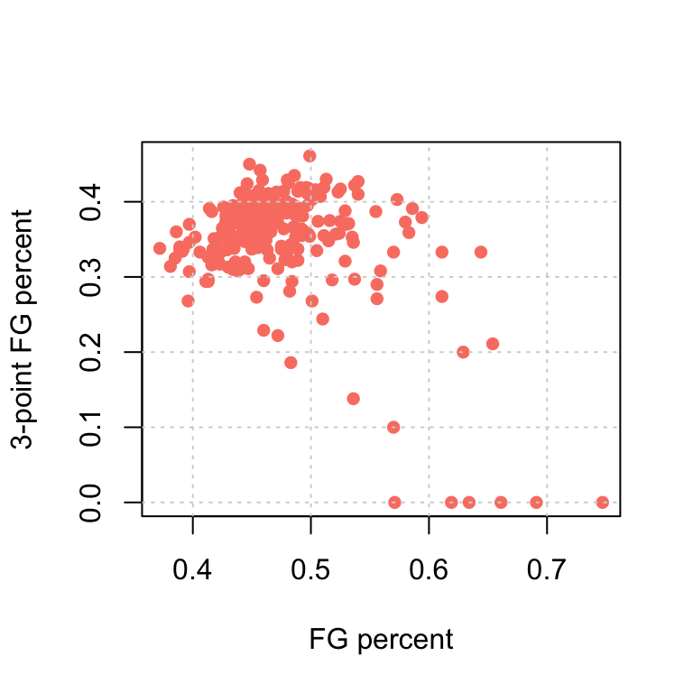
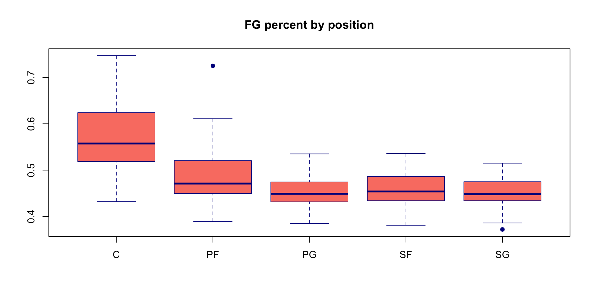

This is intended as an asynchronous, self-learning lecture.
Self-learning task: run the following code to get a sense of the data and create two new variables (points per game, and categorized age)
Bivariate relationship refers to the relationship between TWO variables:
What graph/tool/statistics to use largely depends on the types of the two variables.
Description of the relationship is often open-ended and varies based on the context of the data.
Always remember that Correlation does not imply causation!
Self-learning task: use an AI agent, type in the following prompt: Provide five examples of “correlation does not imply causation”; some examples should include numeric variables and some should include categorical variables.
Example question: is there a relationship between FGPct and FG3Pct for players in the dataset?
[1] NAWe get an NA as there are NA values for both of the variables; to remedy:
Self-learning task: Run ?cor() to bring up the help page; you can see that it is easy to specify what to do with NA values and the type of correlation coefficient to calculate with the cor() function
A correlation coefficient close to 0 signals weak to no linear relationship between the two variables; a correlation coefficient close to 1 or -1 signals strong linear relationship
Interpretation for a positive correlation (\(>> 0.1\))
Self-learning task: Find a variable positively correlated with FGPct and write an interpretation.
Players with a higher field goal percentage tend to have a higher numbers of rebound, on average
[1] 0.5886253Interpretation for a negative correlation (\(<< -0.1\)):
Self-learning task: Write an interpretation for the correlation between FGPct and FG3Pct we found above.
Players with a higher field goal percentage tend to have a lower three-point field goal percentage, on average.
We have been working with many different data and can describe the data in many ways (summary statistics, visualizations, correlations, etc.). However, data does NOT equal to the truth!
In any survey data (like the Changing Childhood Project): respondents are only a random sample of the population. If we see that, for instance, 23% of respondents from the United States are optimistic, it does not mean that exactly 23% of the entire U.S. population are optimistic.
In the NBA example: a player’s true ability (of shooting field goals, for instance) is a latent variable that cannot be directly measured. For instance, if in the 2024 NBA season, player 1 has a higher field goal percentage than player 2, it doesn’t necessarily mean that player 1 is better than player 2; maybe he is just lucky (i.e., his success is “due to random chance”).
Another way to think about this: most of the time, data is not reproducible: if I conduct the same survey again with different respondents, I will get different answers and different statistics; if NBA player 1 is better than player 2 in 2024, it is not a guarantee that he will also be better in 2025.
Descriptive statistics, also referred to as Exploratary Data Analysis (EDA), is about describing the data
Inferential statistics is about generalizing the conclusion to the entire population and/or the truth
Typically, a “hypothesis test” is conducted and a p-value is obtained
If p-value is large (>0.05): the conclusion is not significant and due to random chance
If p-value is small (<0.05): the conclusion is statistically significant
What is the conclusion in this case?
Click to see answer
Players with a higher field goal percentage tend to have a lower three-point field goal percentage, on average. The correlation is statistically significant and not likely due to random chance (p-value \(< 0.001\)).
Pearson's product-moment correlation
data: NBAPlayers2024$FG3Pct and NBAPlayers2024$FGPct
t = -7.6292, df = 230, p-value = 6.224e-13
alternative hypothesis: true correlation is not equal to 0
95 percent confidence interval:
-0.5465566 -0.3402912
sample estimates:
cor
-0.4493933 Recall, a scatterplot is a bivariate graph that visualizes the relationship between two numeric/scale variables.
Self-learning task: Generate the following graph with both base R function and ggplot.

Example question: Is there a relationship between FGPct and the position of the player (Pos)?
Self-learning task: Use R to obtain the following information and generate the graph.
| Pos | mean(FGPct) | median(FGPct) | min(FGPct) | max(FGPct) |
|---|---|---|---|---|
| C | 0.5664444 | 0.5575 | 0.432 | 0.747 |
| PF | 0.4862115 | 0.4710 | 0.389 | 0.725 |
| PG | 0.4511628 | 0.4490 | 0.385 | 0.535 |
| SF | 0.4553962 | 0.4540 | 0.381 | 0.536 |
| SG | 0.4527736 | 0.4480 | 0.372 | 0.515 |

We see that FGPct differ by position for NBA players in the 2024 season. For instance, Centers have a much higher field goal percentage, on average. But is this difference due to random chance? In other words, does FGPct differ significantly by position, on average? This can be answered using a model called “ANOVA.” You don’t need to know the details of this model, but you should be able to interpret a given p-value. In this case, p-value is essentially 0 (\(2\times10^{-16}\)), so we can conclude that FGPct DOES differ significantly by position.
Df Sum Sq Mean Sq F value Pr(>F)
NBAPlayers2024$Pos 4 0.3769 0.09422 42.21 <2e-16 ***
Residuals 232 0.5178 0.00223
---
Signif. codes: 0 '***' 0.001 '**' 0.01 '*' 0.05 '.' 0.1 ' ' 1Self-learning task: Does the average FGPct differ significantly between point guards and power forwards? The following R code conducts an “independent samples t-test.” Report the p-value and write a conclusion.
Welch Two Sample t-test
data: NBAPlayers2024$FGPct[NBAPlayers2024$Pos == "PG"] and NBAPlayers2024$FGPct[NBAPlayers2024$Pos == "PF"]
t = -3.7172, df = 81.391, p-value = 0.0003685
alternative hypothesis: true difference in means is not equal to 0
95 percent confidence interval:
-0.05380784 -0.01628966
sample estimates:
mean of x mean of y
0.4511628 0.4862115 The average FGPct DOES differ significantly between point guards and power forwards (p-value \(= 0.0003685\))
Middle Old Young
C 13 7 16
PF 18 10 24
PG 11 12 20
SF 20 8 25
SG 18 4 31
Middle Old Young
C 0.055 0.030 0.068
PF 0.076 0.042 0.101
PG 0.046 0.051 0.084
SF 0.084 0.034 0.105
SG 0.076 0.017 0.131This table shows that, out of all players, 5.5% are Centers and “young”. This table is not that useful to determine the relationship between position and age.
Middle Old Young
C 0.361 0.194 0.444
PF 0.346 0.192 0.462
PG 0.256 0.279 0.465
SF 0.377 0.151 0.472
SG 0.340 0.075 0.585Here, we can say that there may be a relationship. For instance, among small forwards, 55.6% are “young,” whereas among shooting guards, 35.3% are “young.” Statistical significance can be determined using a “Fisher’s exact test” or a “chi-square test.”
Pearson's Chi-squared test
data: mytable
X-squared = 8.5431, df = 8, p-value = 0.3823Since the p-value is 0.3823, there is NO significant relationship between position and age categories.